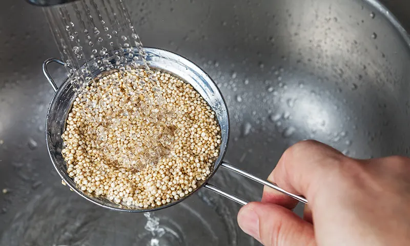
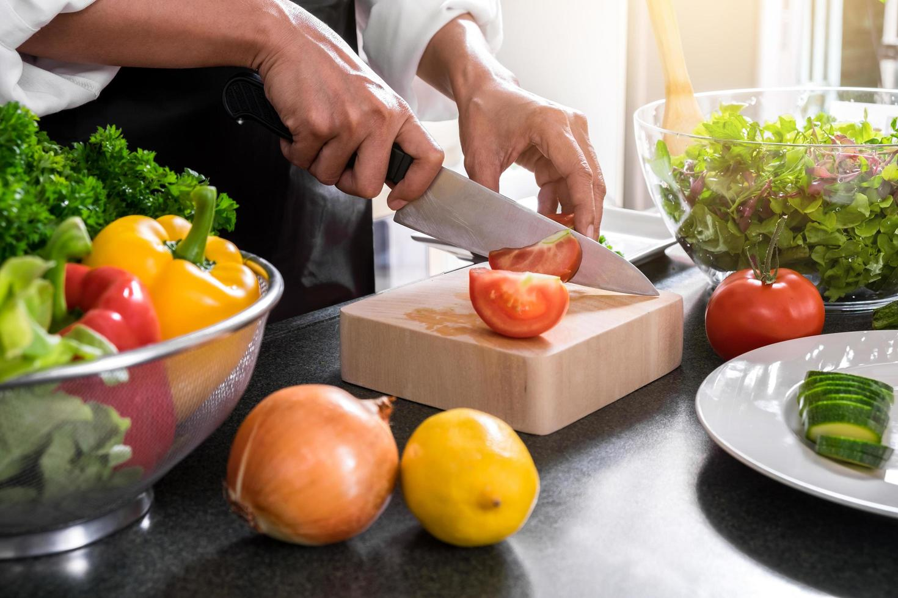
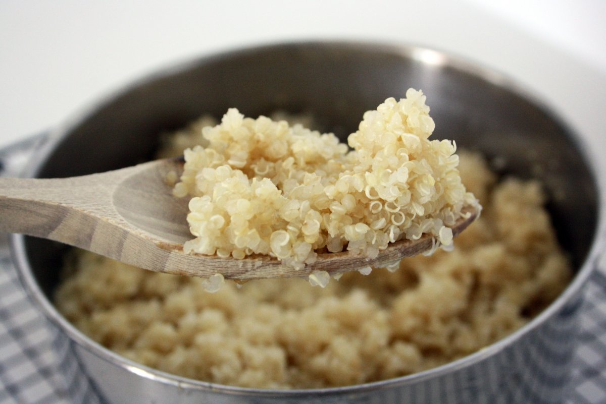
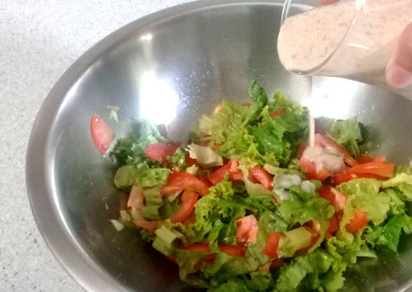

Ensalada de Quinoa y Aguacate

Tabla de contenido
Ingredientes:
- Quinoa: 1 taza.
- Agua: 2 tazas (para cocinar la quinoa).
- Aguacate: 1 o 2, dependiendo del tamaño.
- Tomate: 1 grande o 2 medianos, picados en cubos.
- Pepino: 1, picado en cubos.
- Pimiento rojo: 1, picado en cubos.
- Cebolla roja: 1/4 de taza, picada finamente.
- Perejil fresco: 2-3 cucharadas, picado finamente.
- Limón: el jugo de 1-2 limones.
- Aceite de oliva: 2-3 cucharadas.
- Sal y pimienta al gusto.
- Vinagre balsámico (opcional): 1-2 cucharadas para darle un toque de acidez.
Paso a Paso:
- Enjuaga la quinoa bajo agua fría para eliminar el sabor amargo.

- Luego, cocina la quinoa siguiendo las instrucciones del paquete, generalmente a fuego medio en 2 tazas de agua durante unos 15-20 minutos, o hasta que esté cocida y el agua se haya absorbido. Deja enfriar.

- En un tazón grande, combina la quinoa cocida y enfriada con los ingredientes preparados: aguacate, tomate, pepino, pimiento rojo, cebolla y perejil fresco.

- En un recipiente pequeño, mezcla el jugo de limón y el aceite de oliva .Añade sal y pimienta al gusto, y el vinagre balsámico si lo deseas.

- Vierte la vinagreta sobre la ensalada y mezcla suavemente para asegurarte de que todos los ingredientes estén bien cubiertos.

- Prueba la ensalada y ajusta el sazón según tus preferencias personales. Puedes añadir más sal, pimienta o jugo de limón si es necesario.

Resultado Final